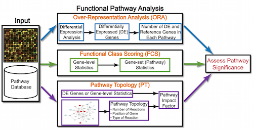
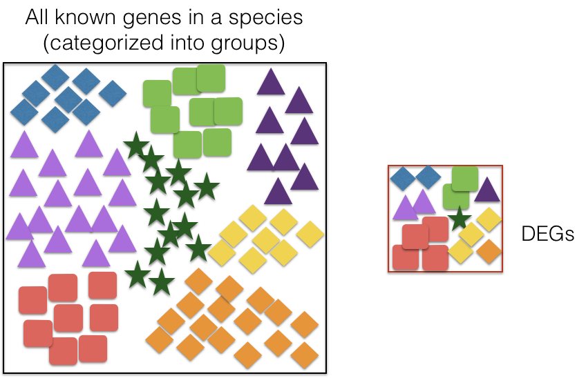
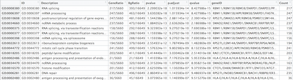
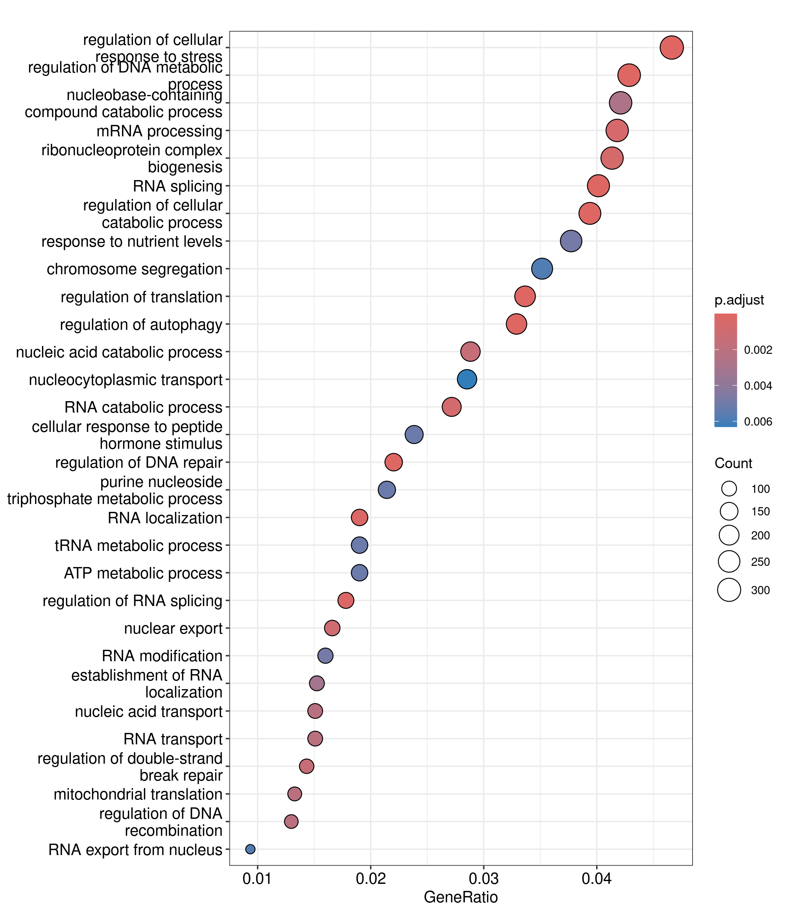
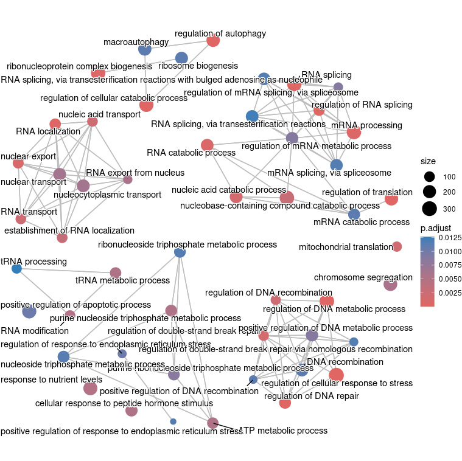
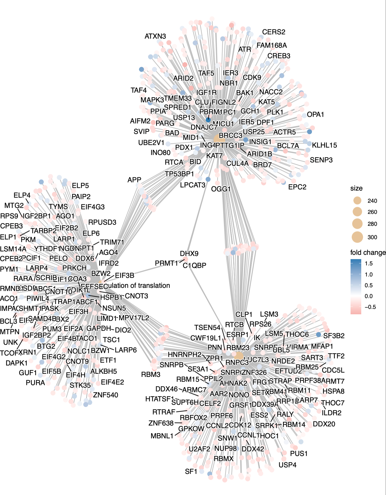

Approximate time: 60 minutes
Learning Objectives:
- Determine how functions are attributed to genes using Gene Ontology terms
- Describe the theory of how functional enrichment tools yield statistically enriched functions or interactions
- Discuss functional analysis using over-representation analysis, and functional class scoring
- Identify popular functional analysis tools for over-representation analysis
Week 8 Slides About ORA Analysis
Functional analysis
The output of RNA-seq differential expression analysis is a list of significant differentially expressed genes (DEGs). To gain greater biological insight on the differentially expressed genes there are various analyses that can be done:
- determine whether there is enrichment of known biological functions, interactions, or pathways
- identify genes’ involvement in novel pathways or networks by grouping genes together based on similar trends
- use global changes in gene expression by visualizing all genes being significantly up- or down-regulated in the context of external interaction data
Generally for any differential expression analysis, it is useful to interpret the resulting gene lists using freely available web- and R-based tools. While tools for functional analysis span a wide variety of techniques, they can loosely be categorized into three main types: over-representation analysis, functional class scoring, and pathway topology [1].

The goal of functional analysis is provide biological insight, so it’s necessary to analyze our results in the context of our experimental hypothesis: FMRP and MOV10 associate and regulate the translation of a subset of RNAs. Therefore, based on the authors’ hypothesis, we may expect the enrichment of processes/pathways related to translation, splicing, and the regulation of mRNAs, which we would need to validate experimentally.
Note that all tools described below are great tools to validate experimental results and to make hypotheses. These tools suggest genes/pathways that may be involved with your condition of interest; however, you should NOT use these tools to make conclusions about the pathways involved in your experimental process. You will need to perform experimental validation of any suggested pathways.
Over-representation analysis
There are a plethora of functional enrichment tools that perform some type of “over-representation” analysis by querying databases containing information about gene function and interactions.
These databases typically categorize genes into groups (gene sets) based on shared function, or involvement in a pathway, or presence in a specific cellular location, or other categorizations, e.g. functional pathways, etc. Essentially, known genes are binned into categories that have been consistently named (controlled vocabulary) based on how the gene has been annotated functionally. These categories are independent of any organism, however each organism has distinct categorizations available.
To determine whether any categories are over-represented, you can determine the probability of having the observed proportion of genes associated with a specific category in your gene list based on the proportion of genes associated with the same category in the background set (gene categorizations for the appropriate organism).


The statistical test that will determine whether something is actually over-represented is the Hypergeometric test.
Hypergeometric testing
Using the example of the first functional category above, hypergeometric distribution is a probability distribution that describes the probability of 25 genes (k) being associated with “Functional category 1”, for all genes in our gene list (n=1000), from a population of all of the genes in entire genome (N=13,000) which contains 35 genes (K) associated with “Functional category 1” [2].
The calculation of probability of k successes follows the formula:

This test will result in an adjusted p-value (after multiple test correction) for each category tested.
Gene Ontology project
One of the most widely-used categorizations is the Gene Ontology (GO) established by the Gene Ontology project.
“The Gene Ontology project is a collaborative effort to address the need for consistent descriptions of gene products across databases” [3]. The Gene Ontology Consortium maintains the GO terms, and these GO terms are incorporated into gene annotations in many of the popular repositories for animal, plant, and microbial genomes.
Tools that investigate enrichment of biological functions or interactions often use the Gene Ontology (GO) categorizations, i.e. the GO terms to determine whether any have significantly modified representation in a given list of genes. Therefore, to best use and interpret the results from these functional analysis tools, it is helpful to have a good understanding of the GO terms themselves and their organization.
GO Ontologies
To describe the roles of genes and gene products, GO terms are organized into three independent controlled vocabularies (ontologies) in a species-independent manner:
- Biological process: refers to the biological role involving the gene or gene product, and could include “transcription”, “signal transduction”, and “apoptosis”. A biological process generally involves a chemical or physical change of the starting material or input.
- Molecular function: represents the biochemical activity of the gene product, such activities could include “ligand”, “GTPase”, and “transporter”.
- Cellular component: refers to the location in the cell of the gene product. Cellular components could include “nucleus”, “lysosome”, and “plasma membrane”.
Each GO term has a term name (e.g. DNA repair) and a unique term accession number (GO:0005125{.uri}), and a single gene product can be associated with many GO terms, since a single gene product “may function in several processes, contain domains that carry out diverse molecular functions, and participate in multiple alternative interactions with other proteins, organelles or locations in the cell” [4].
GO term hierarchy
Some gene products are well-researched, with vast quantities of data available regarding their biological processes and functions. However, other gene products have very little data available about their roles in the cell.
For example, the protein, “p53”, would contain a wealth of information on it’s roles in the cell, whereas another protein might only be known as a “membrane-bound protein” with no other information available.
The GO ontologies were developed to describe and query biological knowledge with differing levels of information available. To do this, GO ontologies are loosely hierarchical, ranging from general, ‘parent’, terms to more specific, ‘child’ terms. The GO ontologies are “loosely” hierarchical since ‘child’ terms can have multiple ‘parent’ terms.
Some genes with less information may only be associated with general ‘parent’ terms or no terms at all, while other genes with a lot of information be associated with many terms.

Tips for working with GO terms
Preparing for clusterProfiler
We will be using clusterProfiler to perform over-representation analysis on GO terms associated with our list of significant genes. The tool takes as input a significant gene list and a background gene list and performs statistical enrichment analysis using hypergeometric testing. The basic arguments allow the user to select the appropriate organism and GO ontology (BP, CC, MF) to test.
To run clusterProfiler GO over-representation analysis, we will change our gene names into Ensembl IDs, since the tool works a bit easier with the Ensembl IDs.
Then load the following libraries:
# Load libraries - these are already installed on the on-demand RStudio instance
library(DOSE)
library(pathview)
library(clusterProfiler)
library(org.Hs.eg.db)
library(ggnewscale)
For the different steps in the functional analysis, we require Ensembl and Entrez IDs. We will use the annotations_edb dataframe that we generated previously. The annotation dataframe was created using an R package called AnnotationDbi. AnnotationDbi provides an interface for connecting and querying various annotation databases using SQLite data storage. The AnnotationDbi packages can query the OrgDb, TxDb, EnsDb, Go.db, and BioMart annotations.
Let’s subset our results to only have the genes that were tested, i.e. genes whose p-adjusted values are not equal to “NA”.
## Untested genes have padj = NA, so let's keep genes with padj != NA
annotations_edb_tested <- dplyr::filter(annotations_edb, padj != "NA" )
Perform the overrepresentation analysis
To perform the over-representation analysis, we need a list of background genes and a list of significant genes. For our background dataset we will use all genes tested for differential expression (all genes in our results table). For our significant gene list we will use genes with p-adjusted values less than 0.1 (we could include a fold change threshold too if we have many DE genes).
## Create background dataset for hypergeometric testing using all tested genes for significance in the results
allOE_genes <- as.character(annotations_edb_tested$ensgene)
## Extract significant results
sigOE <- dplyr::filter(annotations_edb_tested, padj < 0.1)
## Extract the names of the significant genes
sigOE_genes <- as.character(sigOE$ensgene)
Now we can perform GO enrichment for the Biological Process ontology and save the results. Before we do so, it might be good to use ?enrichGO() to see all of the various parameters we can adjust.
There are two important parameters:
-
pvalueCutoff: adjusted pvalue cutoff on enrichment tests to report. Default is 0.05. -
qvalueCutoff: qvalue cutoff on enrichment tests to report as significant. Tests must pass i)pvalueCutoffon unadjusted pvalues, ii)pvalueCutoffon adjusted pvalues and iii)qvalueCutoffon qvalues to be reported. Default was 0.2.
Discussion: Given the above info about the parameters, why have we adjusted both to 1.0 below?
## Run GO enrichment analysis
ego <- enrichGO(gene = sigOE_genes,
universe = allOE_genes,
pvalueCutoff = 1.0,
keyType = "ENSEMBL",
OrgDb = org.Hs.eg.db,
ont = "BP",
pAdjustMethod = "BH",
qvalueCutoff = 1.0,
readable = TRUE)
NOTE: The different organisms with annotation databases available to use with for the
OrgDbargument can be found here.Also, the
keyTypeargument may be coded askeytypein different versions of clusterProfiler.Finally, the
ontargument can accept either “BP” (Biological Process), “MF” (Molecular Function), and “CC” (Cellular Component) subontologies, or “ALL” for all three.
{kind=link}
## Output results from GO analysis to a table
cluster_summary <- data.frame(ego)
## You may want to write this out to a table.

NOTE: Instead of saving just the results summary from the
egoobject, it might also be beneficial to save the object itself. Thesave()function enables you to save it as a.rdafile, e.g.save(ego, file="results/ego.rda"). The complementary function tosave()is the functionload(), e.g.ego <- load(file="results/ego.rda").This is a useful set of functions to know, since it enables one to preserve analyses at specific stages and reload them when needed. More information about these functions can be found here & here.
Let’s explore the columns of these results:
What do we need to know about the output from enrichGO()?
These descriptions are taken from an NCI Coding Club exercise!
Some of the columns are self-explanatory, while others are not:
GeneRatio (k/n): “ratio of input genes that are annotated in a term.” (# of genes in the input list that are annotated to the corresponding term (function) / # of genes in input list).
BgRatio (M/N): “ratio of all genes that are annotated in this term” (The number of genes that are annotated to the term / The total number of genes in the background gene list (“universe”)).
pvalue: over-representation assessed using hypogeometric distribution, which is equivalent to a one sided Fisher’s exact test.
p.adjust: Hypergeometric p-value after correction for multiple testing (“BH adjusted p-values”); see ?p.adjust.
qvalue: another take on FDR adjusted p-values; See ?qvalue::qvalue.
geneID: The gene IDs that overlap with the functional term.
Count: Total number of genes from the input gene list that match the functional term.
Visualizing clusterProfiler results: Dotplots
clusterProfiler has a variety of options for viewing the over-represented GO terms. We will explore the dotplot, enrichment plot, and the category netplot.
The dotplot shows the number of genes associated with the first X terms (size) and the p-adjusted values for these terms (color). This plot displays the top X GO terms by gene ratio (# genes related to GO term / total number of sig genes), not p-adjusted value.
## Dotplot
dotplot(ego, showCategory=30)
To save the figure, click on the Export button in the RStudio Plots tab and Save as PNG.... In the pop-up window, change orientation and size as needed to give a figure of appropriate size for the text labels

Enrichment GO plot (emaplot)
The next plot is the enrichment GO plot, which shows the relationship between the top X most significantly enriched GO terms (padj.), by grouping similar terms together. Before creating the plot, we will need to obtain the similarity between terms using the pairwise_termsim() function (instructions for emapplot). In the enrichment plot, the color represents the p-values relative to the other displayed terms (brighter red is more significant), and the size of the terms represents the number of genes that are significant from our list.
## Add similarity matrix to the termsim slot of enrichment result
ego <- enrichplot::pairwise_termsim(ego)
## Enrichmap clusters the 50 most significant (by padj) GO terms to visualize relationships between terms
emapplot(ego, showCategory = 50)
To save the figure, click on the Export button in the RStudio Plots tab and Save as PNG..., and then adjust as necessary.

Category Netplot
Finally, the category netplot shows the relationships between the genes associated with the top five most significant GO terms and the fold changes of the significant genes associated with these terms (color). The size of the GO terms reflects the number of genes in the terms, with terms with more genes being larger. This plot is particularly useful for hypothesis generation in identifying genes that may be important to several of the most affected processes.
For learning how to customize any of these plots, I highly recommend looking into the tutorials of the Yu Lab, the folks behind clusterProfiler itself!
Note - You may need to install the
ggnewscalepackage usinginstall.packages("ggnewscale")for thecnetplot()function to work.
## To color genes by log2 fold changes, we need to extract the log2 fold changes from our results table creating a named vector
OE_foldchanges <- sigOE$log2FoldChange
names(OE_foldchanges) <- sigOE$symbol
## Cnetplot details the genes associated with one or more terms - by default gives the top 5 significant terms (by padj).
cnetplot(ego, foldChange=OE_foldchanges,vertex.label.font=6)
## You can reduce the of categories that you are viewing on the same plot
cnetplot(ego,
showCategory = 3,
color.params=list(foldChange=OE_foldchanges),
vertex.label.font=6)
To save the figure, click on the Export button in the RStudio Plots tab and Save as PNG..., and then adjust as necessary.

If you are interested in significant processes that are not among the top five, you can subset your ego dataset to only display these processes:
## Subsetting the ego results without overwriting original `ego` variable
ego2 <- ego
# arbitrary list of specific processes
ego2@result <- ego@result[c(8,9),]
## Plotting terms of interest
cnetplot(ego2,
categorySize="pvalue",
foldChange=OE_foldchanges,
showCategory = 5,
vertex.label.font=6)
Optional: Simplify GO Enrichment Results
Because of the nature of GO, organized as a directed acyclic graph, parent terms can show enrichment due to over represented child terms. To reduce redundancy among enriched terms, clusterProfiler uses a simplify() function that uses the “GOSemSim package to calculate semantic similarities among enriched GO terms using multiple methods based on information content or graph structure.” GO terms with >0.7 similarity are removed and represented by the most significant term (Wu et al. 2021). See this NCI Coding Club exercise for more details.
Let’s reduce our GO terms using simplify().
# This is a long and memory intensive step
s_ego<-clusterProfiler::simplify(ego)
s_ego
ASSIGNMENT
Perform GO enrichment analysis with only the up or down regulated genes. This can be useful to identify GO terms impacted in one direction and not the other. Warning: If very few genes are in any of these lists (< 50, roughly) it may not be possible to get any significant GO terms.
## Extract upregulated genes
sigOE_up <- dplyr::filter(annotations_edb_tested, padj < 0.1 & log2FoldChange > 0)
sigOE_up_genes <- as.character(sigOE_up$gene)
## Extract downregulated genes - DO THIS FOR ASSIGNMENT
You can then create
ego_up&ego_downobjects by running theenrichGO()function forgene = sigOE_up_genesorgene = sigOE_down_genes.
Report how many clusters you get for each, and compare and contrast the top 5 cluster descriptions for each analysis.
Create a dotplot for at least one of these conditions.
This lesson has been developed by members of the teaching team at the Harvard Chan Bioinformatics Core (HBC). These are open access materials distributed under the terms of the Creative Commons Attribution license (CC BY 4.0), which permits unrestricted use, distribution, and reproduction in any medium, provided the original author and source are credited.